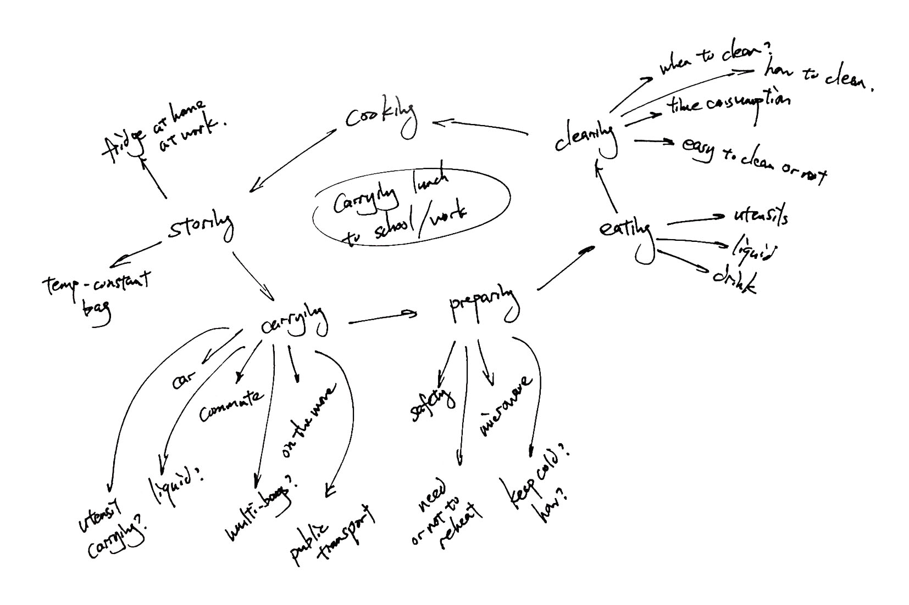
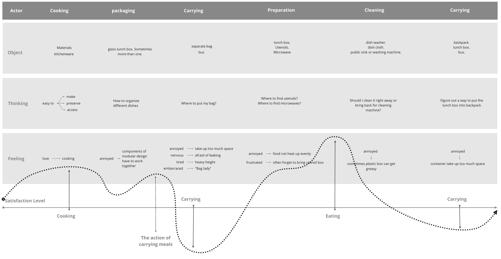

How can we improve students' experience bringing lunch to school?
Overview
We observed that many students at Carnegie Mellon University choose to bring their own lunch to school instead of dining in cafeterias or restaurants. I want to understand how is students' experience of carrying food to school, and find out potential product opportunities.
Results
Through domain research, interviews, participatory design sessions, journey maps, and persona, The project ended with research insights and product requirements:
Insights:
- Most lunch boxes does not give a sense of security to the users
- The space in a students' backpack is a scarce resource. Taking up too much causes frustration.
- Carrying more than one bag in public transport is embarrassing because it gets in others' way and attract a lot of attention.
Product Requirments:
- Lunch box design MUST lead users to trust that is leak-proof
- Lunch box SHOULD be made lighter
- The space inside the box SHOULD be reusable after finishing the food
- Lunch box design COULD integrate utensil placement
- Configuration COULD be customizable
Research Phase One: What to Ask
Asking the right question is crucial to understanding deep into the motivations and emotions of the interviewee, rather than only understanding merely the action. To do that, I started my domain research, which is to bring food to school myself.
Try it Myself
To understand the process of bringing food to school, I tried to do it myself by cooking enough food for an entire week, and bring a bit every day.
After the week, I mapped out my process into a diagram:
Looking at the diagram, which maps out each steps of the cycle and the objects my interviewee might interact with, I let my curiosity take over.
Asking the Right Questions
As generating questions, I followed the guidelines listed in ''Handbook of People Research'' by Francine Gemperle, ''Interviewing Users'' by Steve Portigal, and ''Practical Empathy'' by Indi Young to phrase it so that they are open-ended and progress from wide topics to details. The questions are generated around four aspects:
- Why do students carry food to school?
- What process do they go through?
- What products do students use to carry food to school? What do students feel using the products?
- How do students interact with their transportation?
A research protocol was made with 8 general questions and 25 detailed questions to guide the interviews. A pilot session was run with a classmate to test if there is ambiguity with the phrasing and to practise the conversation.
Research Phase Two: Talking to People
Six participants were interviewed. One of them interviews happened in the student lounges, where students store, reheat and eat their prepared lunch. The interviewee was reheating her pasta when being approached. Two were interviewed with their lunch boxes at hand. A rough journey map was used to synthesize initial findings.
Interview Protocol and Notes

A rough journey map to find initial insights
Some of the initial findings are:
- None of them puts the container in their backpack when coming to school. One was concerned about the smell, and all others were concerned about leaking.
- Half of them use public transportation, while the other half walk to school.
- Three of them complained about the size of their lunch box. One interviewee has her boyfriend carrying the boxes for her.
Research Phase Three: Focus Group
The session is design to fill in the gaps of interviews and further understand user behavior. Three participants were recruited in the co-design session, all of them are active practitioner of bringing meals to school.
Some of the initial findings are:
- Eating and Cooking are generally high satisfaction. Satisfaction drops during carrying and cleaning period
- Safety is defined as not breakable, leak-proof, and non-toxic. Portability is defined as small and light.
- Portability and Safety are negatively correlated to each other.
- Metal boxes tend to be perceived as safer, but also less portable. Clip is an indication of safety. Plastic materials are often perceived as not safe.
Synthesis Phase One: Insights
Insights are the results of asking why at the patterns we find. By diving deep into why students behave the way they do, we found these points most interesting:
- Most lunch boxes does not give a sense of security to the users
- Interviewees put containers in separate bags to prevent them from leaking into their bags. Students don’t trust the lunch boxes to be securely sealed. It is not the containers' inability to seal that keeps users using a separate bag, but the fear of not sealing.
- The space in a student’s backpack is a scarce resource. Taking up too much causes frustration.
- After finishing the food, users put the containers in their backpack. However, the space inside the container is wasted because they don't feel comfortable putting anything else in there. "The empty box takes up a fourth of the bag," said one of the interviewees.
- Carrying more than one bag in public transport, especially during rush hours, is embarrassing because it gets in others’ way and attract a lot of attention.
- "I don't want to be a bag lady."
- "I mean, normally, it's ok. But when the bus is packed, I feel like I am in everybody's way."
And here are some other findings that are equally as intersting:
- Lunch box design does not allow utensils to be put together. Utensils that are separately placed are often forgotten.
- Lunch boxes do not give enough freedom to customize in terms of function.
- The choice of cooking beforehand is not saving time, but moving the time spent elsewhere.
To better present the results, I plotted a journey map and curated a persona according to the data so that designers can relate better to.
Synthesis Phase Two: Product Opportunity Gap
POG consists of potential improvements that can be implemented into future products. Based on the insights, I ranked different POGs into three different levels: MUST, SHOULD, and COULD:
- Lunch box design MUST lead users to trust that is leak-proof
- Lunch box SHOULD be made lighter
- The space inside the box SHOULD be reusable after finishing the food
- Lunch box design COULD integrate utensil placement
- Configuration COULD be customizable
Conclusion and Reflection
The project comes to an end here. The insights of my research served as a starting point for a team in another course: Integrated Product Development Methods.
Personally, I explored different ways of doing user research, especially during interviews. I found taking notes on a blank piece of paper as my preferred way, and having the protocol always in my view contrains my curiosity to ask follow up questions.